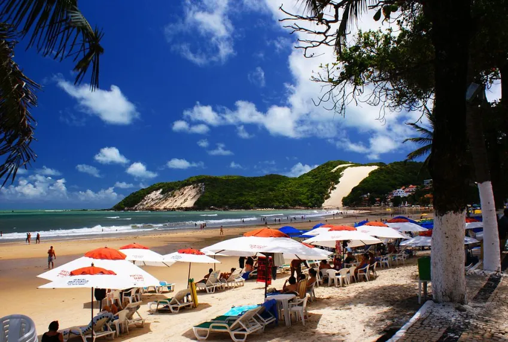
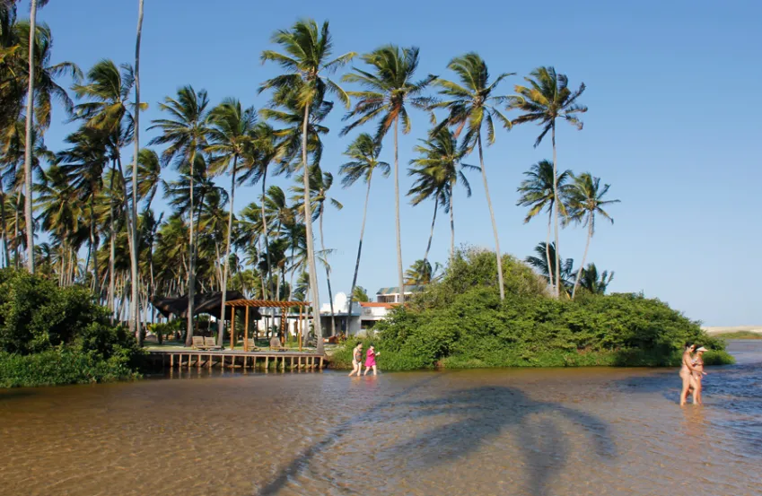
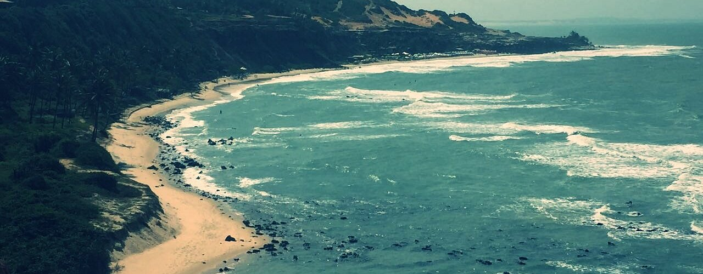

Rio Grande do Norte:
Belezas, iguarias e cultura.
Início
Galeria
Vídeos
Quiz
Curiosidades
Referências
🔊
🔇
Morro do Careca na praia de Ponta Negra

Praia de Ponta Negra, Morro do Careca ao fundo
Passeios nas Dunas de Genipabu
Falésia na Praia de Pipa

Barra de Punaú

Praia do amor dos afogados
<<<<<<< HEAD ======= >>>>>>> e5c3a4c93b09e226242416ed563888c6688f9676
 Morro do Careca na praia de Ponta Negra
Morro do Careca na praia de Ponta Negra
 Passeios nas Dunas de Genipabu
Passeios nas Dunas de Genipabu
 Falésia na Praia de Pipa
Falésia na Praia de Pipa